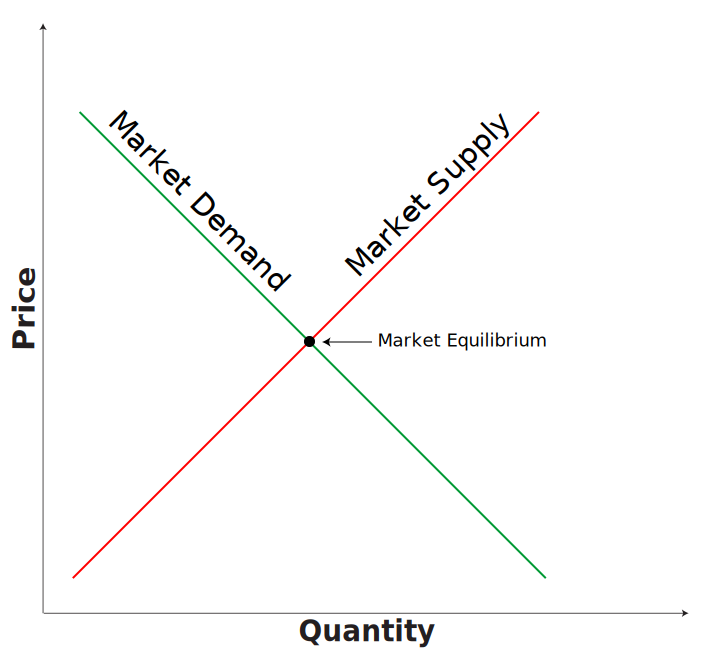
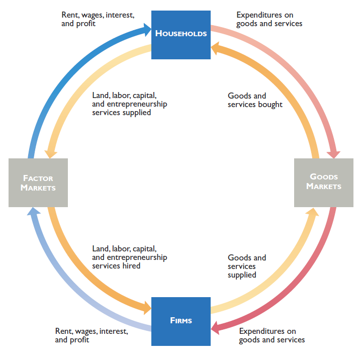

Analizując gospodarkę ekonomiści posługują się modelami. Modele opisują w uproszczony sposób pewne prawidłowości ekonomiczne.
Zastosowanie modeli w badaniach wymaga ustalenia podstawowych założeń (zasad) odnośnie do funkcjonowania danego modelu, w tym przyjęcia klauzuli ceteris paribus.
Modele najczęściej mają postać rysunkową lub dane są w postaci równań matematycznych.

Produkt Krajowy Brutto (PKB) - jest to łączna wyrażona w pieniądzu wartość wszystkich dóbr finalnych i usług wytworzonych w danym kraju zazwyczaj w ciągu roku lub kwartału. Jest to suma wartości dodanej wytworzonej przez wszystkie podmioty gospodarcze danego kraju, niezależnie kto jest ich właścicielem.
PKB można wyliczać jako wydatki na dobra i usługi finalne różnych podmiotów gospodarczych jak: gospodarstwa domowe, przedsiębiorstwa, państwo i cudzoziemcy, w tym wypadku:
\(PKB = C + I + G + X\)
gdzie: PKB to produkt krajowy brutto, C - konsumpcja, I - inwestycje, G - wydatki rządowe, X - eksport netto.

| 2004 | 2007 | 2010 | Waga | |
|---|---|---|---|---|
| Cena aluminium | 1758 | 2644 | 2232 | 0.2 |
| Cena miedzi | 2766 | 6710 | 7234 | 0.8 |
| Wskaźnik cen aluminium | 100 | 150 | … | - |
| Wskaźnik cen miedzi | 100 | 242 | … | - |
| Wskaźnik cen obu metali | 100 | 224 | … | - |
Waga odzwierciedla udział danego dobra w całkowitych wydatkach typowego gospodarstwa domowego lub przedsiębiorstwa. Suma wag jest równa 1.
Ile wynosi wskaźnik cen aluminium w 2007 (rok bazowy to 2004)?
Podobne obliczenia wykonujemy dla innych dóbr.
Ogólny wskaźnik cen (np. CPI lub PPI) to średnia ważona wartości wskaźników dla poszczególnych dóbr (np. cen aluminium i miedzi).
Wskaźnik cen towarów i usług konsumpcyjnych (Consumer Price Index) oblicza i publikuje Główny Urząd Statystyczny.
Aby policzyć ten wskaźnik, co miesiąc zbierane są ceny ok. 1400 towarów (takich jak pieczywo, mięso, owoce, gazety, środki do prania, meble, sprzęt komputerowy) i usług (internetowych, transportowych, turystycznych) z ok. 35 tysięcy punktów handlowych i usługowych.
Aby policzyć zmianę ogólnego poziomu cen – oprócz znajomości cen poszczególnych kategorii towarów i usług – konieczna jest także znajomość udziału tych kategorii w wydatkach konsumentów.
Zmiana ceny produktu, który ma znaczny udział w wydatkach w większym stopniu wpływa na ogólny poziom cen, niż zmiana ceny produktu o niskim udziale. Wspomniane udziały służą jako wagi przy wyliczaniu przeciętnego poziomu cen.
(ang. Producer Price Index, PPI) – wskaźnik obrazujący zmiany poziomu cen ustalanych przez producentów na różnych etapach procesu wytwarzania dóbr. Powszechnie stosowany na świecie, jako jedna z miar poziomu inflacji.
W Polsce indeks cen dóbr produkcyjnych przyjmuje postać wskaźnika cen produkcji sprzedanej przemysłu i jest obliczany oraz publikowany przez Główny Urząd Statystyczny.
Od marca 2009 r. Narodowy Bank Polski oblicza i publikuje cztery miary tzw. inflacji bazowej, np.:
W przypadku cen towarów konsumpcyjnych:
Stopa inflacji = \((CPI_1 - CPI_0) / CPI_0 \times 100\%\)
Spadek z 50% do 40% to spadek o 10 punktów procentowych lub o 20%.
\((40 - 50)/50 = -0.2 = 20\%\)
Tabela: Średnia cena nowego domu w UK
| 1963 | 1983 | 2009 | |
|---|---|---|---|
| Cena domu (w tys. funtów) | 3.1 | 35.6 | 161 |
| Wskaźnik cen (2009 = 100) | 6.3 | 39.7 | 100 |
| Realna cena domu w tys. funtów (w cenach z 2009) | 49.2 | 90 | 161 |
Jak policzyć realną cenę domu w roku 1963 (2009 jest rokiem bazowy)?
Jak policzyć realną cenę domu w roku 2009 (1963 jest rokiem bazowy)?
Jest to wskaźnik liczby dóbr, które można nabyć za jednostkę pieniężną (np. 1$)
Ludzie zwykle rozumują w kategoriach nominalnej wartości pieniądza.
Załóżmy, że za wynagrodzenie 1000 Euro kupujesz tylko chleb, który kosztuje 1 Euro/kg.
Przypuśćmy, że masz do wybory dwa warianty:
Wielkości:
| Produkcja | Koszta całkowity stały | Koszt całkowity zmienny | Koszt całkowity |
|---|---|---|---|
| 1 | 100 | 50 | 150 |
| 2 | 100 | 80 | 180 |
| 3 | 100 | 100 | 200 |
| 4 | 100 | 110 | 210 |
| 5 | 100 | 150 | 250 |
| 6 | 100 | 220 | 320 |
| 7 | 100 | 350 | 450 |
| 8 | 100 | 640 | 740 |
| Produkcja | Koszt całkowity stały | Koszt przeciętny stały |
|---|---|---|
| 1 | 100 | 100 |
| 2 | 100 | 50 |
| 3 | 100 | 33.3 |
| 4 | 100 | 25 |
| 5 | 100 | 20 |
| 6 | 100 | 16.6 |
| 7 | 100 | 14.3 |
| 8 | 100 | 12.5 |
| Produkcja | Koszt całkowity zmienny | Koszt przeciętny zmienny |
|---|---|---|
| 1 | 50 | 50 |
| 2 | 80 | 40 |
| 3 | 100 | 33.3 |
| 4 | 110 | 27.5 |
| 5 | 150 | 30 |
| 6 | 220 | 36.7 |
| 7 | 350 | 50 |
| 8 | 640 | 80 |
| Produkcja | Koszt przeciętny stały | Koszt przeciętny zmienny | Koszt przeciętny całkowity |
|---|---|---|---|
| 1 | 100 | 50 | 150 |
| 2 | 50 | 40 | 90 |
| 3 | 33.3 | 33.3 | 67 |
| 4 | 25 | 27.5 | 52.5 |
| 5 | 20 | 30 | 50 |
| 6 | 16.6 | 36.7 | 53.3 |
| 7 | 14.3 | 50 | 64.3 |
| 8 | 12.5 | 80 | 92.5 |
| Produkcja | Koszt całkowity | Koszt krańcowy |
|---|---|---|
| 1 | 150 | |
| 2 | 180 | 30 |
| 3 | 200 | 20 |
| 4 | 210 | 10 |
| 5 | 250 | 40 |
| 6 | 320 | 70 |
| 7 | 450 | 130 |
| 8 | 740 | 290 |
Wyrażony jest w jednostkach alternatywnego dobra.
Z ilu jednostek jednego dobra (X) trzeba zrezygnować, aby otrzymać dodatkową jednostkę innego dobra (Y)?
| Producent | Dobro | Czas produkcji (w minutach) | Produkcja na godzinę |
|---|---|---|---|
| Daria | Sok | 2 | 30 |
| Daria | Sałatka | 2 | 30 |
| - | - | - | - |
| Jan | Sok | 10 | 6 |
| Jan | Sałatka | 2 | 30 |
Produkcja na godzinę, przy równym podziale czasu na produkcję obu towarów:
| Producent | Dobro | Produkcja (1h) |
|---|---|---|
| Daria | Sok | 15 |
| Daria | Sałatka | 15 |
| - | - | - |
| Jan | Sok | 3 |
| Jan | Sałatka | 15 |
Jest to zdolność podmiotu do produkcji dobra (świadczenia usługi) po niższym koszcie alternatywnym.
| Producent | Dobro | Koszt alternatywny |
|---|---|---|
| Daria | Sok | 1 sałatka |
| Daria | Sałatka | 1 sok |
| - | - | - |
| Jan | Sok | 5 sałatek |
| Jan | Sałatka | 1/5 soku |
Jan ma niższy koszt alternatywny produkcji sałatek, dlatego nawiązanie relacji handlowych między Janem i Darią będzie możliwe, gdy:
Podział towarów po nawiązaniu wymiany handlowej.
| Producent | Dobro | Liczba towarów (na godzinę) |
|---|---|---|
| Daria | Sok | 20 |
| Daria | Sałatka | 20 |
| - | - | - |
| Jan | Sok | 10 |
| Jan | Sałatka | 10 |
Przed specjalizacją i nawiązaniem relacji handlowych, produkcja łączna na 1 godzinę Jana i Darii (zakładając, że 30 minut poświecają na produkcję soków i 30 minut na produkcję sałatek) wynosi:
Po specjalizacji (zakładając dla uproszczenia, że Daria produkuje tylko soki a Jan tylko sałatki):
30 soków (D) + 30 sałatek (J)
Łączne możliwości produkcyjne wzrastają więc z 48 jednostek do 60 jednostek.
Państwowy dług publiczny (PDP) jest wskaźnikiem zadłużenia sektora finansów publicznych określającym wysokość zobowiązań zaciągniętych przez poszczególne jednostki sektora na rynku finansowym (w tym bankowym).
Dług publiczny można wyrażać w wartościach nominalnych (kwota łącznych zobowiązań) lub w stosunku do wartości produktu krajowego brutto. Drugi wskaźnik jest jednym z mierników wykorzystywanych w ocenie wiarygodności państwa na arenie międzynarodowej.
Dlatego często pod pojęciem obniżania długu publicznego rozumie się obniżenie stosunku długu publicznego do PKB.
http://ec.europa.eu/eurostat/tgm/table.do?tab=table&plugin=1&language=en&pcode=teina230
Jest to ujemne saldo w budżecie instytucji – sytuacja, w której wydatki w budżecie danej instytucji są wyższe niż jej dochody w danym okresie rozliczeniowym (roku budżetowym). Przeciwieństwem deficytu budżetowego jest nadwyżka budżetowa.
http://ec.europa.eu/eurostat/tgm/table.do?tab=table&plugin=1&language=en&pcode=teina200
Procedura nadmiernego deficytu jest nakładana przez Radę UE na państwo członkowskie w przypadku niewypełnienia budżetowych kryteriów konwergencji (spójności), których wartości odniesienia dotyczą:
Państwo, którego deficyt został uznany za nadmierny, musi podjąć odpowiednie działania korygujące.
Gospodarka jest to system (system ekonomiczny) obejmujący całokształt działalności gospodarczej prowadzonej w danym regionie (gospodarka regionalna), kraju (gospodarka narodowa) lub na całym świecie (gospodarka światowa).
Działalność gospodarcza lub procesy gospodarowania obejmują sfery produkcji, podziału, wymiany i konsumpcji dóbr w warunkach ograniczoności zasobów (zasoby naturalne, kapitał, praca - czyli czynniki produkcji). Działalność gospodarcza ludzi obywa się w sposób ciągły ze względu na odnawialność i rozwój ludzkich potrzeb.
Rynek, albo mechanizm rynkowy, to mechanizm, dzięki któremu kupujący i sprzedający współdziałają, ustalając ceny i wymieniając dobra, usługi i papiery wartościowe. Na wolnym rynku, wskutek tzw. ‘gry’ popytu i podaży, ustalają się i zmieniają ceny produktów.
Równowaga rynkowa jest to taka sytuacja na rynku danego dobra, w której wielkość popytu równa jest wielkośći podaży. Rynek, na którym występuje stan równowagi jest rynkiem stabilnym.